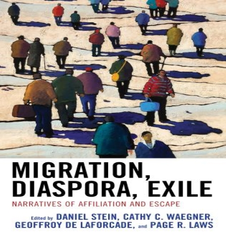

Donate Today
Donating to the causes you care about not only benefits the charities themselves, it can
be deeply rewarding
for you too. Millions of people give to charity on a regular basis to support causes they believe in, as
well as for the positive effect it has on their own lives
100tk
200tk
500tk
1000tk
5000tk
Donate Now
Our Donate Plan
Let us all extend the hand of cooperation so that Allah may extend the hand of mercy on
us. May he be
released on the Day of Judgment.Together we can smile the last smile of succeess!
Diaspora Definition
The term diaspora comes from the Greek verb diaspeirō meaning “to scatter” or “to spread about.” As first
used in Ancient Greece, diaspora referred to people of dominant countries who voluntarily emigrated from
their homelands to colonize conquered countries. Today, scholars recognize two kinds of diaspora: forced
and voluntary.
Forced diaspora often arises from traumatic events such as wars, imperialistic conquest, or enslavement,
or from natural disasters like famine or extended drought. As a result, the people of a forced diaspora
typically share feelings of persecution, loss, and desire to return to their homeland.
why people are diaspora?
